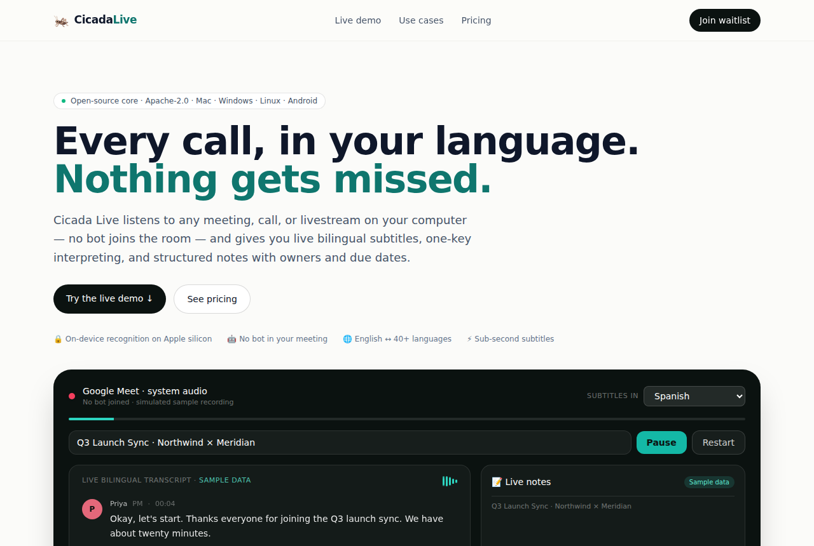

Cicada: Open-source live subtitles and interpreting for any meeting
wquguru/cicada · ProductivityApache-2.0⭐ 3,060

What it is. wquguru/cicada (Cicada · 知了) captures your system audio directly — no meeting bot joins the call — and shows live subtitles, detects the spoken language, and translates it into your system language within seconds. As it listens, it builds a running meeting record: summary, topics, key points, conclusions, to-dos, and a glossary of names and terms. Press a talk key (right ⌥ on Mac, right Ctrl on Windows) and speak; the other side hears your translated voice inside the meeting app.
Why it's taking off. It works wherever sound plays — Zoom, Teams, Google Meet, Webex, Discord, Telegram voice chats, X Spaces, YouTube, Twitch, podcasts — so the same tool covers remote work, livestreams and in-person conversation. On Apple silicon Macs, speech recognition runs fully on device, so audio never leaves the machine. The repo is Apache-2.0, supports four platforms under one version number and record format, and has been growing fast (about 507 stars a day recently, per the listing).
Where the product opportunity is. The install story is the weak point for non-technical users: Windows and Linux require your own AI service key, and virtual-audio routing on Mac is fiddly. A hosted build with bundled translation minutes, speaker separation, cross-device sync and a one-click installer would map cleanly to a subscription for US and global remote workers, sales teams and non-native English speakers. Two things to respect: bio-metric consent rules (Illinois BIPA, CCPA, Singapore PDPA) if voice cloning ships, and the README's note that phone OSes block call-audio capture — Android only supports videos and in-person mode.
Today's top 5
| # | Repo | Buzz | Startup | Overall |
|---|---|---|---|---|
| 1 | wquguru/cicada | 8.33 | 7.7 | 7.79 |
| 2 | Noniv/abyssal-garden | 8.67 | 6.0 | 7.22 |
| 3 | RoutineMiku/apkstart | 7.33 | 6.6 | 6.69 |
| 4 | FrigadeHQ/yogurt | 8.0 | 7.4 | 6.63 |
| 5 | heydamir/unslop | 8.33 | 6.15 | 6.46 |